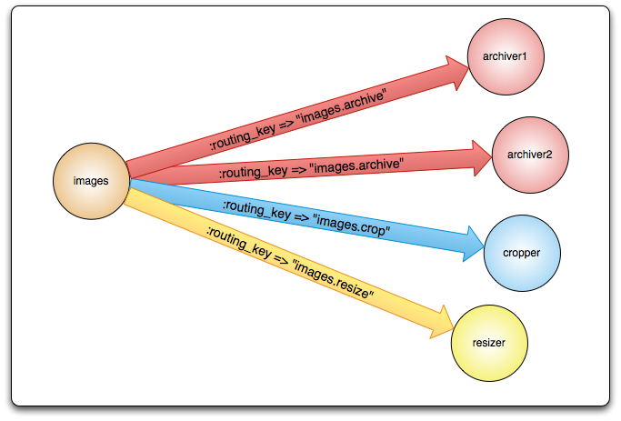

Connection / Channel / VHost
Exchange
Queue
Binding
Message
Consumer
Extensible
AMQP entities and routing schemes (by default) are defined by applications themselves, not a broker administrator.
Consumers may not get messages when booting / restarting the broker and/or your services.
Be aware of potential definition conflicts!
Implements AMQP 0.9.1 and provides some extensions
Publisher confirmations
Negative acknowledgements
Alternate Exchanges
Per-queue Message Time-to-Live
...
These extensions are way out of the scope of this presentation.
Queues store messages
to be fetched by consumers
So two connections cannot declare a queue with the same name
Non-durable queues (transient queues) are purged if/when a server restarts.
Are deleted when all consumers have finished using them.
The AMQP v0.9.1 specification also provides a way for applications to fetch (pull) messages from the queue only when necessary.
queue.pop do |metadata, payload|
if payload
puts "Fetched a message: #{payload.inspect}, content_type: #{metadata.content_type}."
else
puts "No messages in the queue"
end
end
Exchanges take a message and route it into zero or more queues
Often compared to post offices
Typically used for for 1-to-1 communication or unicasting

Direct (near real-time) messages to individual players in an MMO game
Delivering notifications to specific geographic locations (for example, points of sale)
Distributing tasks between multiple instances of the same application all having the same function
Direct exchange with no name
Pre-declared by the broker
Every queue is automatically bound to it with a routing key which is the same as the queue name
1-to-n communication or broadcasting
Massively multiplayer online (MMO) games can use it for global events
Sport news sites can use them for distributing score updates to mobile clients in near real-time
Distributed systems can broadcast various state and configuration updates
Binding queues to direct exchanges WITHOUT specifying a routing key can behave exactly as if using a fanout exchange.
1-to-n or n-to-m communication, multicasting.
Matches routing key and a pattern used to bind a queue to the exchange.

'quick.orange.rabbit' => Q1, Q2
'lazy.orange.elephant' => Q1, Q2
'quick.orange.fox' => Q1
'lazy.brown.fox' => Q2
'quick.brown.fox' => DISCARDEDMessage metadata-based routing
# when binding to a headers exchange, :arguments parameter is used to specify matching rules
@channel.queue("", :auto_delete => true).bind(exchange, :arguments => { :os => 'linux' })exchange.publish "For linux/IA64", :headers => { :arch => "IA64", :os => 'linux' }
exchange.publish "For linux/x86", :headers => { :arch => "x86", :os => 'linux' }
exchange.publish "For any linux", :headers => { :os => 'linux' }@channel.queue("", :auto_delete => true).bind(exchange,
:arguments => { :os => 'linux', :arch => 'x86' })Transfer of work between stages in a multi-step workflow (routing slip pattern)
Distributed build/continuous integration systems can distribute builds based on multiple parameters
Durability of exchanges
Durability of queues
Persistence of messages
Durability of a queue does not make messages that are routed to that queue durable.
Only persistent messages are recovered after a broker restart.
Messages may be published as persistent (or not)
Publishing to durable exchange/queue DOES NOT make messages durable
Publishing messages as persistent affects performance
AMQP broker removes a message from the queue after it is sent to an application
AMQP broker removes a message after the application sends back an acknowledgement for the message
When a consumer dies without sending an acknowledgement:
Number of messages to send to a consumer without receiving an acknowledgement
Obviously prefetching is ignored for consumers that do not use explicit acknowledgements
channel1.prefetch(3)
# App #1 will be given up to 3 messages at a time. If it does not
# send an ack after receiving the messages, then the messages will
# be routed to app #2.
channel2.prefetch(1)
# app #2 processes messages one-by-one and has to send an ack after receiving each messageQueues love Exchanges! We should enforce 0.9.1
We should not use the default exchange
Publishers should not know who their consumers (queues) are
Publishing/consuming messages should be a no brainer (More extended convention?)